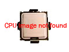

<div style = "text-align: center;margin-top: 0px;" align = "center">
	
	<h2> i7 4770K [Haswell] </h2>
	<h4> 리소그래피 </h4>
	<span> 22 나노미터</span><br/>
	<h4> 메모리 유형 </h4>
	<span> DDR3 1333/1600,DDR3L-1333/1600 @ 1.5V </span><br/>
	
	<h4> 성능 </h4>
	<span> 4코어 8스레드 </span> <br/>
	<span> 3.50GHz-3.90GHz </span> <br/>
	<span> 8MB SmartCache 사용 </span><br/>
	<span> 최대 32GB 메모리 사용 가능 </span><br/>
	
	<h4> 사용 전력 </h4>
	<span> 84W </span><br/>
	
	<h4> 기본 그래픽 </h4>
	<span> Intel HD Graphics 4600 (350MHz-1.20GHz | 2GB Memory) </span><br/>
	
	<h4> 사용자 권장 가격 </h4>
	<span> $339 - $350 </span><br/>
	
	<h4> 상태 </h4>
	<span> 단종됨 </span>
</div>